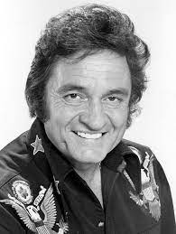
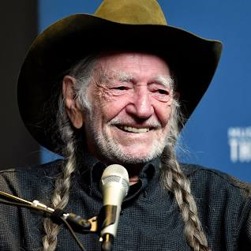

COUNTRY MUSIC
TAYLOR SWIFT
Taylor Swift is an American singer-songwriter who initially rose to fame as a country music artist. Her early music featured heartfelt storytelling, country melodies, and relatable lyrics about love and relationships.
MORE - Songs

JOHNNY CASH
Johnny Cash, also known as "The Man in Black," was an iconic American country singer-songwriter known for his deep, distinctive voice and songs that often told stories of love, hardship, and redemption.
MORE Songs
Dolly Parton
Dolly Parton is a legendary American country singer, songwriter, and actress known for her powerful voice, heartfelt ballads, and her extensive contribution to country music.
MORE Songs

WILLIE NELSON
Willie Nelson is an American country music icon known for his distinctive voice and hit songs that often blend country, folk, and rock elements.
MORE Songs